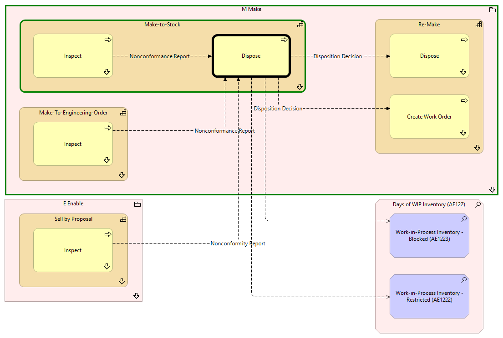

Dispose - Context
(
)

generated_by
build_archi_xml.py::gen_proc_node_context_view
generator_path
pedro/capabilities/build_archi_xml_assign/build_archi_xml_assign.py
run_at
2026-10-19T21:03:33
view_type
process_context
M Make
Re-Make
Dispose
Dispose - Context
Create Work Order
Create Work Order - Context
Re-Make - Processes
Make-To-Engineering-Order
Inspect
Inspect - Context
Make-To-Engineering-Order - Processes
Make-to-Stock
Inspect
Inspect - Context
Dispose
Make-to-Stock - Processes
M Make - Processes
E Enable
Sell by Proposal
Inspect
Inspect - Context
Sell by Proposal - Processes
E Enable - Processes
Days of WIP Inventory (AE122)
Work-in-Process Inventory - Restricted (AE1222)
Work-in-Process Inventory - Blocked (AE1223)
Nonconformance Report
Inspect
Dispose
Nonconformance Report
Inspect
Dispose
Disposition Decision
Dispose
Create Work Order
Disposition Decision
Dispose
Dispose
Dispose
Work-in-Process Inventory - Restricted (AE1222)
Dispose
Work-in-Process Inventory - Blocked (AE1223)
Nonconformity Report
Inspect
Dispose